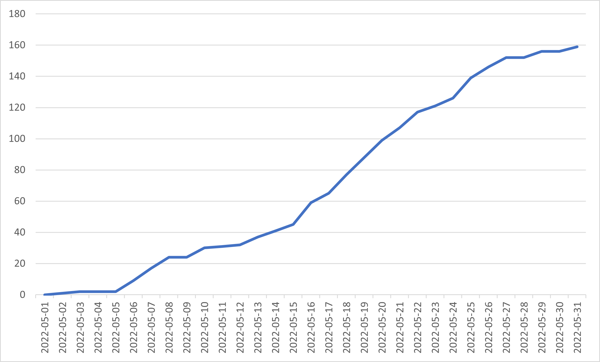
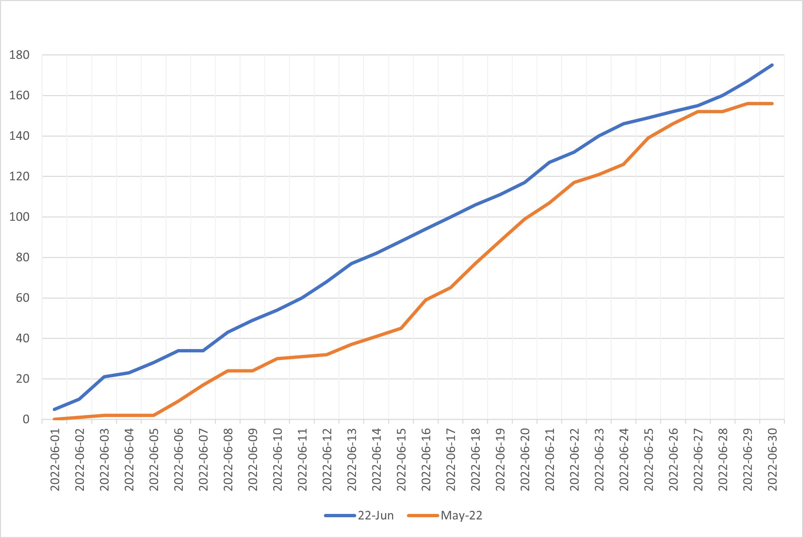

My 2 cents
Visual Feedback as a tool for Productivity
As I read more about human imagination and psychology, I realized that visuals are one of the most powerful tools
used by humans in developing imagination, I thought maybe if instead of tracking our habits by writing daily accomplishemts in a diary,
what if we make a more visually appealing record, so that just a mere thought of that habit brings that visual description to our mind and forces to evaluate current progress.
Background
So I applied this idea to track one of my habits, not going into details, but I can define the activity as follows:
I had set some target for an entire month and I had to achieve it in 180 independent items that could be performed in any order and
the low lying fruit principle applied, so that doing more than 8-10 pieces a day took more and more time per task and tasks had to be essentially distributed over the entire month
And most importantly, this activity was not an official or mandatory duty, so I had to search for some motive to do it despite business of the week
I had been setting targets since past 6 months and noted daily progress in a diary but it was no good, I was inconsistent with it and it frequently happened that I would not do any item for many days at stretch and get habitual of forgetting about then,
then again a few days of intense activity to cover some backlog, getting fatigued and then again abandoning it for days.
But this meant I was lagging in my target and since there my efforts were spontaneous, I was not able to spot any patterns in how good or bad I am doing or what improvements are needed, so I kept lagging for last 6 months:

Methodology, Results and discussion
Now one may ask if this experiment is controlled? i.e. were parameters, other than my will, that could have affected the effort were kept constant??
The answer is indeed yes, since November, December were holidays in my college and January and February, being months before midsem were by definition free and activities apart from studies that I did had mostly fixed allocation of time throughout (mostly nill)
Still since proper data is available only for May and June, now only these two will be compared I started plotting my daily progress for May in Excel sheet and this is what the plot is:


- The cumulative data of June is much more linear or regular compared to May's
- In May, there are atleast 3 regions of great slowdown
- Like May, there are days in June when progress slows down considerably but this time the rebound is much quicker than May, in June there are only 2 slowdowns and one of them around 7th is literally just a single day with 0 activity. I am looking for a metric for classifying slowdown but still you can agree qualitatively

- During past months, I had no idea about how close I am to my target. Most of the time, I didn't even know how many tasks I had done and would forget doing them for days, but now I dont need to remember, as soon as a single thought about the target comes , this graph would pop up and I would vividly remember if I was below or above line and I would start thinking of correcting the course
- At the end of month, I got complacent that I had done enough and can relax but as soon as 2 days passed, I saw that I was much below the curve, and my mind got obsessed with corrective action so that blue line could cling like a snake to the orange branch